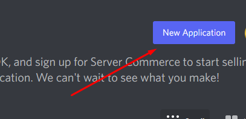
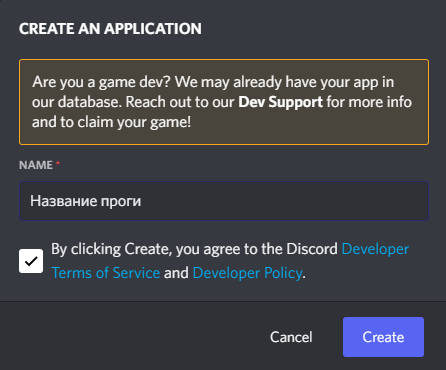
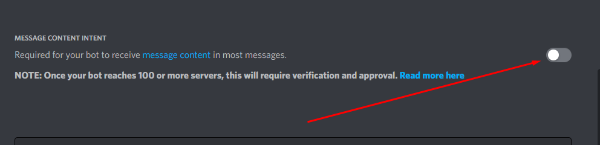
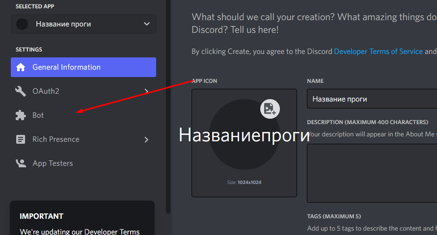
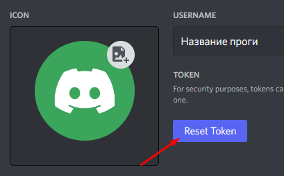
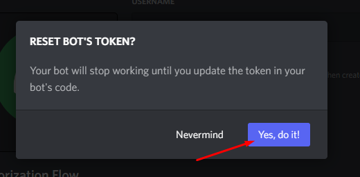
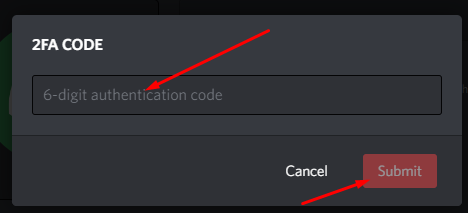
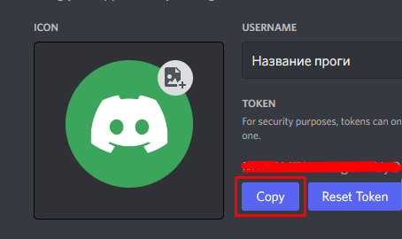
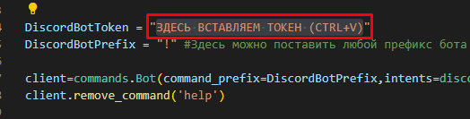
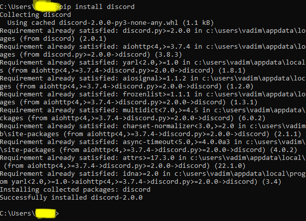

GoldenDDoS
Всем салют GoldenDDoS юзеры!
Сейчас я вам расскажу как создать своего Discord бота-боттера Minecraft серверов, инструкция ниже :)
Как создать

- Заходим в Bot и жмем Add Bot

- Скачиваем код Discord бота-боттера и нужный файл:
- На странице Bot жмем Reset Token, проходим двофакторную аутентификацию и копируем токен

- Откриваем код который скачал(а) и вводим токен и сохраняем

Как запустить (на ПК)
- Жмем Win (Значок Windows) + R и вводим cmd, если не работает такая комбинация как Win + R то в поиске находим cmd
- У вас открилось черное окно тоесть терминал, вводим pip install discord или py -m pip install discord

- Вводим cd ПУТЬ_К_КОДУ_БОТА_(ЕСЛИ_НА_РАБОЧЕМ_СТОЛЕ_ТО_ВВЕДИТЕ_Desktop) (Например: cd Desktop\Папка_бота) важно чтобы в названии папки не было пробелов
- Теперь вводим py НАЗВАНИЕ_ФАЙЛА или python НАЗВАНИЕ_ФАЙЛА (Например: py DiscordBotDDoSer.py или python DiscordBotDDoSer.py) и жмем Enter
Спасибо за внимание! :)
Если у вас возникли проблемы обратитесь к нам в https://dsc.gg/goldenddos
(C) 2022 Корпорация Wawastera